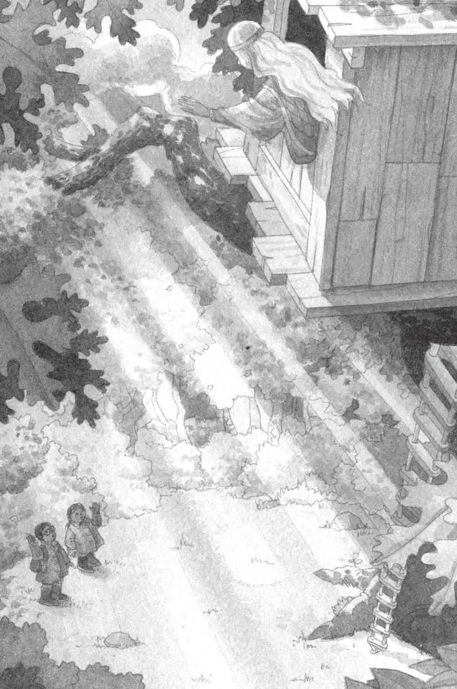

“你来自卡米洛特。”杰克兴奋地说，“我在书里读到过卡米洛特。”
“是吗？那你读过哪些关于我的事呢？”摩根问。
“你……你是一个女巫。”杰克说。
摩根笑了，说：“你可不能读什么就信什么，杰克。”
“但你肯定是一位魔法师吧？”安妮问。
“大多数人都叫我魔法师，但我同时也是一位图书管理员。”摩根说。
“图书管理员？”安妮问道。
“是的。我到二十世纪——你们这个时代来收集图书。你们很幸运，出生在一个有这么多书的时代。”摩根说。
“为卡米洛特的图书馆收集图书？”杰克问道。
“完全正确。”摩根说，“我乘坐这个树屋环球旅行，在不同的地方、不同的时代收集书籍。”
“你在这里找到书了吗？”杰克问。
“噢，当然，我找到了许多奇妙的书。我想把它们借回去，请我们的抄写员们照着抄写。”摩根说。
“书里的这些书签都是你放的吗？”杰克问。
“是的。你们看，我非常喜欢书里的图片，有时候我想去造访这些图片里的场景，所以，我就用这些书签把我想去的地方标记下来。”摩根回答。
“那你是怎么去的呢？”安妮问。
“我给树屋施了一个咒语。”摩根说，“当我指着一幅图片许下愿望时，树屋就会把我带到我想去的地方。”
“我想，应该是你把这个东西落在恐龙时代了。”杰克说着把金勋章递给摩根。
“哦，谢谢你！我还在想，我到底把它丢在什么地方了呢。”摩根说着把勋章放进斗篷的一个暗袋里。
“那么，这个咒语对谁都管用吗？”安妮问，“不管谁试，都能成功？”
“噢，亲爱的，当然不是，不是谁都可以。”摩根说，“除了我，只有你们能做到。以前从来没有别的人看见过我的树屋。”
“树屋是隐形的吗？”安妮问。
“是的。”摩根说，“我没想到它会被人发现。后来，你们出现了，不知怎么，你们似乎一下子就被我的魔法勾住了。”
“这……这是为什么呢？”杰克问。
“怎么说呢？我想有两个原因吧。”摩根解释道，“第一，安妮相信魔法，所以她能看见树屋。同时呢，她的信念又传递给了你，杰克，让你也看见了树屋。”
“哦，天哪，原来是这样。”杰克吃惊地说。
“第二是因为你很爱读书，当你拿起书的时候，我的魔法咒语就奏效了。”
“哇，好神奇！”安妮惊叹道。
“当你们出发去恐龙时代的时候，你们简直无法想象我有多担忧。所以我迅速做出了决定，跟你们一起过去。”摩根说。
“哦，原来你就是那只无齿翼龙！”安妮兴奋地说。
摩根微微地笑了。
“你还是那只黑猫、那名骑士和波利！”安妮全明白了。
“是的。”摩根轻声说。
“你变成那么多事物，是为了要帮助我们？”杰克问。
“对，但现在我必须回家了，卡米洛特的人们需要我的帮助。”摩根说。
“你要走了吗？”杰克轻声问。
“嗯，我必须得离开这儿了。”摩根说。
她拿起杰克的背包，把它递给了杰克。
杰克和安妮拾起雨衣。外面的雨已经停了。
“你不会忘记我们的，对吗？”在他们穿雨衣时，安妮问道。
“永远不会。”摩根笑眯眯地看着两个孩子说，“你们经常让我想起我自己。安妮，你相信奇迹。杰克，你热爱知识。还有比这更好的组合吗？”
仙女摩根轻轻摸了摸安妮的额头，又碰了碰杰克的额头，脸上露出了微笑。
“再见！”她说。
“再见！”安妮和杰克说。
安妮先离开树屋，杰克跟在后面，他们最后一次爬下绳梯。
他们站在大橡树下，抬头往上看。
摩根正看着窗外，那一头长长的白发在微风中轻轻拂动。
起风了。
树叶开始颤动。
空气中充斥着一种响亮的哨音。
杰克用手捂住耳朵，把眼睛闭得紧紧的。
然后，一切都静止了。
完完全全地静止不动了。
杰克睁开眼睛。
树屋不见了。
全都不见了。
一切都彻底消失了。
安妮和杰克抬头凝视着空荡荡的橡树。他们站了一会儿，聆听着这份寂静。
安妮叹了口气，轻声说：“我们走吧。”

杰克点点头，他心里难过得说不出话来。
动身时，杰克把双手插进口袋，他摸到了什么东西。
杰克掏出那个东西，原来是金勋章。
“看！安妮。”他说，“怎么会……”
安妮笑了，说：“肯定是摩根放在那儿的。”
“可是我怎么没看到呢？”杰克问。
“魔法。”安妮说，“这说明她还会回来的。”
杰克脸上露出了笑容。他紧紧攥住勋章，和安妮一起走进潮湿的、被阳光映照的树林里。
这时候，太阳透过树枝洒下光芒，所有湿漉漉的树叶都在阳光下闪闪烁烁。
树叶、树枝、水洼、灌木、杂草、藤蔓、野花……都像珠宝一样晶莹闪亮。
或者说，都像金子一样熠熠生辉。
“安妮说得对。”杰克想，“别去想那个藏宝箱了。”
他们家乡就有宝藏，数不尽的宝藏，到处都是。